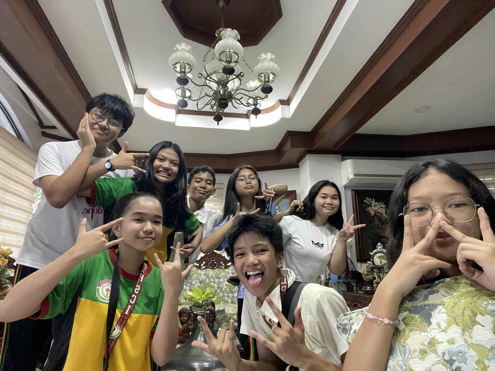
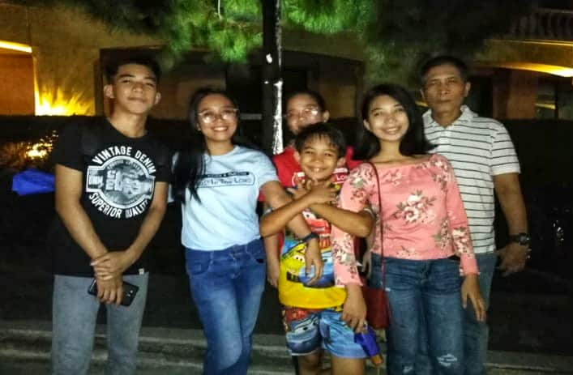

Magandang araw/Annyeonghaseyo/Good day! I am Emmanuel Subaria, but most people call me “Emman.” I am 15 years old and was born on February 12, 2010. I’m currently studying at Las Piñas City National Science High School, working hard to achieve my goals and aspirations in life. To help you get to know me better, you may refer to the table below.
| CATEGORY | FAVORITE |
|---|---|
| Color | Yellow |
| Food | Adobo |
| Fruit | Mango |
| Hobby | Watching Anime |
| Song | Pahintulot by Shirebound And Busking |
| Sport | Volleyball |
| Subject | TLE/ICT |
| Quote | “Just do your best, and God will do the rest.” |
These are the people I’m usually with at school, the ones I spend most of my time with. We laugh together, talk about anything, go out when we can, and even study when we have an upcoming quiz. They’re not just my “friends”; they’re my best of friends, who make school lighter, more fun, and less stressful. Aya, Chloie, Dash, Grace, Jadee, Jayzel, Keisha, Kiel A., Kiel R., Martin, Micah, Riley and Taranee, each and everyone of them has a different personality, but that’s what makes our group lively and joyful. Whether it’s joking around during breaks, helping each other with assignments, or just hanging out, trying to release the stress brought by academics.
The most important and precious people in my life, the ones I love the most, this is my family, known as the “Subaria family.” They were the ones who were with me since the day that I was born. They provided for my needs, not only for my physiological needs but also for my love, belonginess, physical, and many other needs. Where would I be without them? They supported me in every single step ever since when I was a baby and until now in my academics. I pray that they remain strong, young, happy, and most of all, faithful in God. May they achieve their ambitions, goals, dreams, and objectives in Life. No matter where life takes me, I will always be thankful for them, and I will always do my best to make them proud in every single way.
PLAY THIS WHILE SCROLLING FOR BETTER EXPERIENCE!!